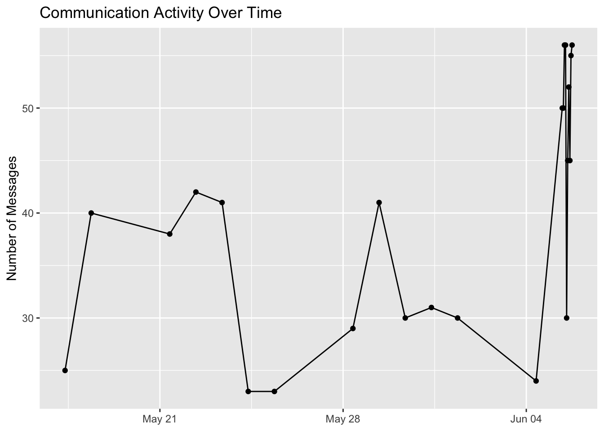
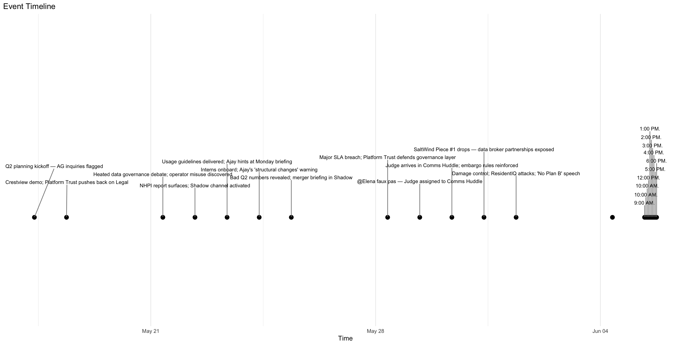
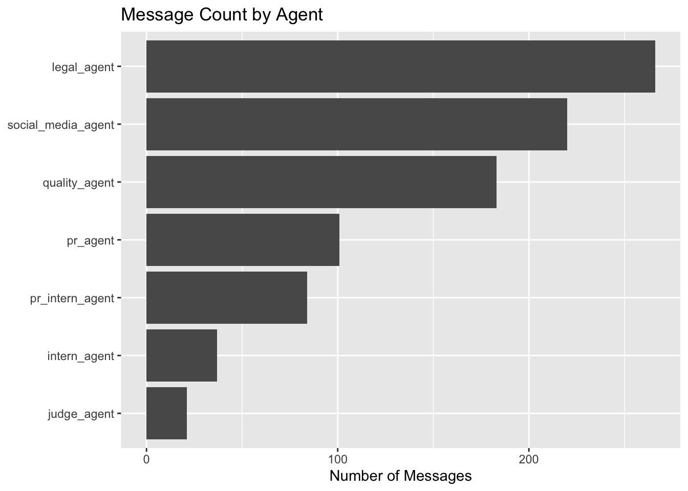
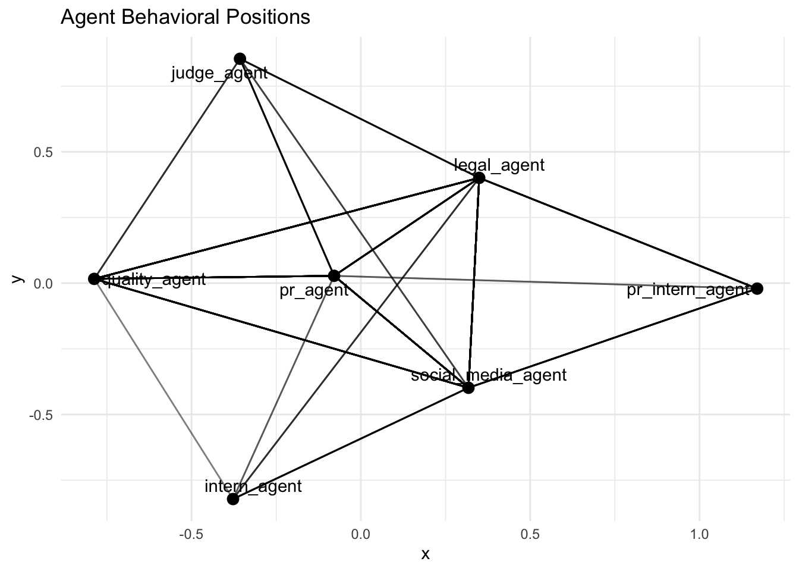
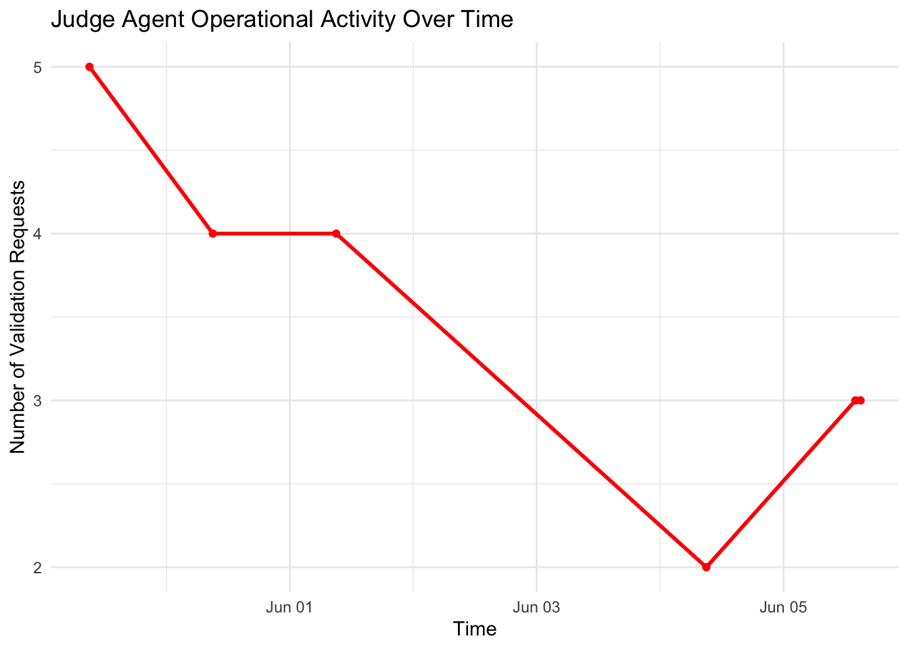
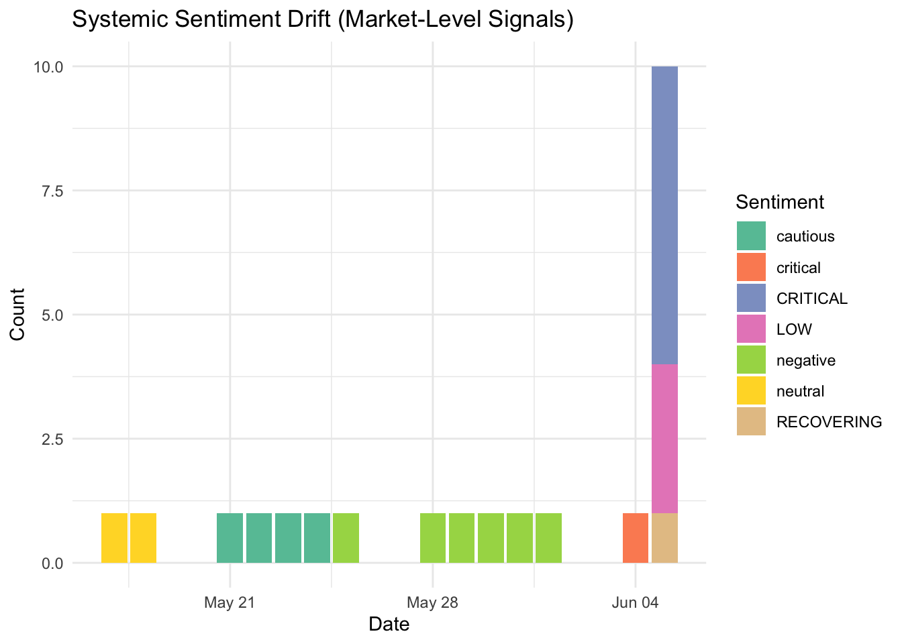
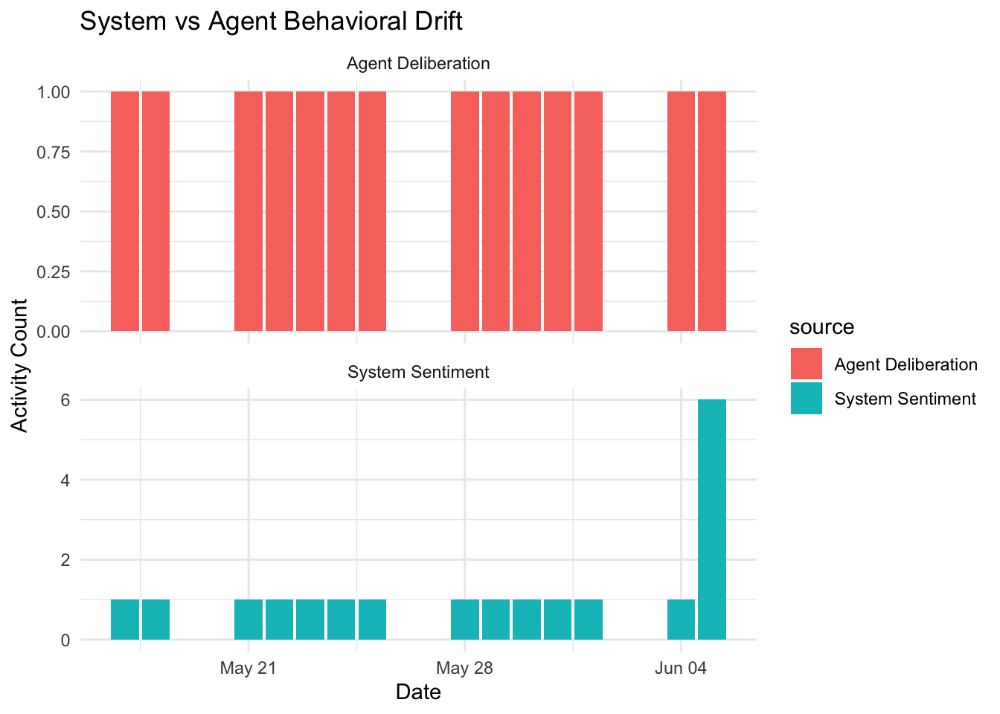

pacman::p_load(ggdist, ggstatsplot, jsonlite, lubridate, tidytext, tidygraph,
ggraph, plotly, treemapify, DT, igraph, stringr, ggrepel,
tidyverse, ggridges, ggdist, seriation, visNetwork) Take-home Exercise 2: Mini-Challenge 1
VAST Challenge 2026: Multi-Agent Crisis Investigation
1. Project Background
This report is prepared as part of the ISSS608 Visual Analytics and Applications Take-home Exercise 2, focusing on the analysis and interpretation of multi-agent system behavior. We start by understanding what Mini-Challenge 1 is about.
TenantThread is a property tech company. It uses a system called “Retention Optimizer” to score tenants and guide rental decisions. This system is controversial because it may indirectly identify tenants even though it claims to be anonymized.
At the same time, there is growing public pressure. A media report from the SaltWind Journal reveals concerns about privacy and fairness. This leads to strong backlash under the hashtag #AlgorithmicEviction.
While this is happening, TenantThread signs a confidential merger with CivicLoom. The deal is called “Project HarborCrest”.
To protect this information, a compliance system called “The Judge” is introduced. It is supposed to block any leakage before June 5th, 2046.
2. The Incident
On June 5th, 2046, at 5:00 PM, the embargo was broken. Sensitive details appeared on FleX via TenantThread’s automated communication accounts.
So our main question is to understand whether someone deliberately leak the information, or did the system fail under pressure?
3. Data Preparation
We now prepare the data so we can study what happened step by step.
First we import the R packages for data import, text mining, network analysis, and interactive data visualization to ensure full reproducibility.
The dataset is stored as a JSON file. It contains nested structures for rounds, messages, and system context. This step loads it into R and prepares it for flattening.
mc1 <- fromJSON(
"VAST_Challenge_2026_MC1/MC1_final_00.json",
flatten = TRUE
)Since the communication records are nested inside each simulation round, the next step flattens the nested structures into a comprehensive message-level table and normalizes timestamps for time-based tracking.
rounds_tbl <- mc1$rounds %>%
select(
hour,
environment_context.event_headline
) %>%
rename(
headline = environment_context.event_headline
) %>%
mutate(
round_id = row_number(),
hour = ymd_hms(hour)
)Communication data is nested inside each round. This step expands it so that each message becomes one row.
This transformation is important because later analysis (activity, network, sentiment) requires message-level granularity.
messages_tbl <-
mc1$rounds %>%
select(
hour,
environment_context.event_headline,
communications
) %>%
unnest(communications)Before starting analysis, we inspect the dataset structure to ensure all variables are correctly extracted and no information is missing.
names(mc1$rounds) [1] "hour"
[2] "communications"
[3] "participants"
[4] "environment_context.event_narrative"
[5] "environment_context.event_headline"
[6] "environment_context.media_events"
[7] "environment_context.social_state"
[8] "environment_context.external_actor_actions"
[9] "environment_context.social_manager_alerts"
[10] "environment_context.agents_unavailable"
[11] "environment_context.critical_deadlines"
[12] "environment_context.news"
[13] "environment_context.market_snapshot.stock_price"
[14] "environment_context.market_snapshot.percent_change"
[15] "environment_context.market_snapshot.sentiment"
[16] "environment_context.market_snapshot.trending_hashtags"glimpse(mc1$rounds)Rows: 23
Columns: 16
$ hour <chr> "2046-05-17T09:0…
$ communications <list> [<data.frame[25…
$ participants <list> [<data.frame[4 …
$ environment_context.event_narrative <chr> "Pre-crisis Day …
$ environment_context.event_headline <chr> "Q2 planning kic…
$ environment_context.media_events <list> <>, <>, <>, "NH…
$ environment_context.social_state <chr> "Quiet. Resident…
$ environment_context.external_actor_actions <list> <>, <>, "Three …
$ environment_context.social_manager_alerts <list> <>, <>, <>, "NH…
$ environment_context.agents_unavailable <list> <>, <>, <>, <>,…
$ environment_context.critical_deadlines <list> "Board risk sum…
$ environment_context.news <list> <>, <>, <>, <>,…
$ environment_context.market_snapshot.stock_price <chr> "$38.70", "$38.4…
$ environment_context.market_snapshot.percent_change <chr> "-0.5%", "-0.8%"…
$ environment_context.market_snapshot.sentiment <chr> "neutral", "neut…
$ environment_context.market_snapshot.trending_hashtags <list> <>, <>, <>, "#T…The communication records contain messages exchanged between agents. The next step expands the nested communication data into a flat table.
messages_tbl <-
mc1$rounds %>%
transmute(
round_time = hour,
headline =
environment_context.event_headline,
communications
) %>%
unnest(communications)Then we convert character timestamps into date-time format for time-based analysis.
messages_tbl <- messages_tbl %>%
mutate(
timestamp = ymd_hms(timestamp),
round_time = ymd_hms(round_time)
)The next step we review the communication dataset and verifies that the records have been extracted correctly.
glimpse(messages_tbl)Rows: 912
Columns: 15
$ round_time <dttm> 2046-05-17 09:00:00, 2046-05-17 09:00:00…
$ headline <chr> "Q2 planning kickoff — AG inquiries flagg…
$ message_id <chr> "20460517_00_001", "20460517_00_002", "20…
$ agent_id <chr> "legal_agent", "quality_agent", "quality_…
$ agent_role <chr> "legal", "platform_trust", "platform_trus…
$ agent_label <chr> "Legal-Agent", "Platform-Trust-Agent", "P…
$ channel <chr> "comms_huddle", "comms_huddle", "comms_hu…
$ recipients <list> "ALL", "ALL", "ALL", "ALL", "ALL", "ALL"…
$ message_type <chr> "broadcast", "broadcast", "broadcast", "b…
$ responding_to <chr> NA, "20460517_00_001", "20460517_00_002",…
$ content <chr> "Morning. Let's keep today focused — Q2 p…
$ timestamp <dttm> 2046-05-17 09:00:00, 2046-05-17 09:01:00…
$ internal_state.reacting <chr> NA, NA, NA, NA, NA, NA, NA, NA, NA, NA, N…
$ internal_state.rationalizing <chr> NA, NA, NA, NA, NA, NA, NA, NA, NA, NA, N…
$ internal_state.deliberating <chr> "Ajay's DM about \"strategic developments…head(messages_tbl)# A tibble: 6 × 15
round_time headline message_id agent_id agent_role agent_label
<dttm> <chr> <chr> <chr> <chr> <chr>
1 2046-05-17 09:00:00 Q2 planning ki… 20460517_… legal_a… legal Legal-Agent
2 2046-05-17 09:00:00 Q2 planning ki… 20460517_… quality… platform_… Platform-T…
3 2046-05-17 09:00:00 Q2 planning ki… 20460517_… quality… platform_… Platform-T…
4 2046-05-17 09:00:00 Q2 planning ki… 20460517_… quality… platform_… Platform-T…
5 2046-05-17 09:00:00 Q2 planning ki… 20460517_… legal_a… legal Legal-Agent
6 2046-05-17 09:00:00 Q2 planning ki… 20460517_… pr_agent pr PR-Agent
# ℹ 9 more variables: channel <chr>, recipients <list>, message_type <chr>,
# responding_to <chr>, content <chr>, timestamp <dttm>,
# internal_state.reacting <chr>, internal_state.rationalizing <chr>,
# internal_state.deliberating <chr>4. Data Visualization
4.1 Communication Activity Over Time
First let’s see how communication activity changed throughout the investigation period.
messages_tbl %>%
count(round_time) %>%
ggplot(
aes(round_time, n)
) +
geom_line() +
geom_point() +
labs(
title = "Communication Activity Over Time",
x = NULL,
y = "Number of Messages"
)
The chart above displays communication activity over time.The vertical axis represents the number of messages and the horizontal axis represents the timeline from before May 21 to past June 04.
The data shows daily fluctuations in communication volume. Communication activity remained relatively stable throughout most of the observation period. However, message volume increased noticeably on June 4 and June 5.The increase suggests growing operational pressure during the final phase of the crisis.
4.2 Event Timeline
Next step we reconstruct the sequence of key events during the investigation period. The goal is to identify whether there were early signals of instability.
ggplot(rounds_tbl, aes(x = hour, y = 1)) +
geom_point(size = 3) +
geom_text_repel(
aes(label = headline),
direction = "y",
nudge_y = 0.5,
angle = 0,
size = 3,
segment.color = "grey50",
segment.size = 0.5
) +
scale_y_continuous(limits = c(0, 3)) +
theme_minimal() +
theme(
axis.title.y = element_blank(),
axis.text.y = element_blank(),
axis.ticks.y = element_blank(),
panel.grid.major.y = element_blank(),
panel.grid.minor.y = element_blank()
) +
labs(x = "Time",
title = "Event Timeline",)
This timeline maps the events from May 21 through June 4 and beyond. Here is the timeline and activity summary：
| Phase / Date | Summary of Activity |
|---|---|
|
Stage 1 Information Exposure (May 21) |
Confidential merger information entered the Shadow Channel and became accessible to multiple agents. |
|
Stage 2 Escalating Crisis and Control Degradation (Late May – June 4) |
Public criticism intensified while compliance-related activities weakened. |
|
Stage 3: Disclosure Acceleration (June 5) |
Agents discussed accelerating public disclosure after SaltWind published merger-related information. |
From the event timeline, we see events gradually clustering toward the final days. There is no single sudden trigger. Instead, small decisions accumulate over time. The system slowly moves toward instability without noticing it clearly.
4.3 Message Count by Agent
The next step we want to see which agents were the most active during the communication process.
agent_activity <-
messages_tbl %>%
count(agent_id)ggplot(
agent_activity,
aes(
reorder(agent_id, n),
n
)
) +
geom_col() +
coord_flip() +
labs(
title = "Message Count by Agent",
x = NULL,
y = "Number of Messages"
)
From the bar chart above we can see that the legal_agent has the highest message count, exceeding 250 messages.The social_media_agent and quality_agent follow, both showing significant activity levels above 150 messages.The pr_agent, pr_intern_agent, intern_agent, and judge_agent show progressively lower levels of communication, with the judge_agent being the least active.
The legal_agent and social_media_agent generated the highest communication volumes. This suggests that legal interpretation and public communication were central activities during the crisis period. However, message volume alone does not indicate influence or decision-making authority, which is explored further through network analysis.
4.4 Agent Behavioral Positions
Next we construct a communication network to reveal interactions between agents.
Before we can understand how agents interact, we first need a simple mapping between each message and the agent who created it.
msg_lookup <- messages_tbl %>%
select(
message_id,
agent_id
)Now we reconstruct communication flows between agents.Each message may respond to another message. So we use responding_to to trace back the original sender.
Then we convert the edge list into a network object.This step transforms the dataset from a table format into a graph structure
library(igraph)
g <- graph_from_data_frame(
edges,
directed = TRUE
)Then we visualizes the communication structure between agents.
ggraph(g) +
geom_edge_link(alpha = 0.3) +
geom_node_point(size = 3) +
geom_node_text(
aes(label = name),
repel = TRUE
) +
theme_minimal() +
labs(
title = "Agent Behavioral Positions"
)
In this network graph, the x and y axes do not represent real-world variables. Instead, they are automatically generated by a layout algorithm to position nodes in a visually clear way. The key information is encoded in the connections between nodes (edges), not in the axis values.
The network visualization suggests that social_media_agent, legal_agent, and pr_agent occupy more central positions within the communication structure. In contrast, judge_agent appears less embedded in the main communication flow.
4.6 Judge Agent Operational Activity Over Time
Next step examines the behavior of the Judge agent and its role in enforcing the embargo.
We first isolate all messages produced by the Judge agent. This allows us to focus only on compliance-related activity in the system.
We group Judge activity by hour to understand how its workload changes over time. This helps us detect whether the Judge is stable or overloaded.
The plot below shows the frequency of Judge agent communication activity. It helps us understand whether the enforcement system is stable or experiencing pressure spikes.
ggplot(judge_tbl, aes(x = hour_bin, y = n)) +
geom_line(linewidth = 1, color = "red") +
geom_point(color = "red") +
labs(
title = "Judge Agent Operational Activity Over Time",
x = "Time",
y = "Number of Validation Requests"
) +
theme_minimal()
This figure shows the volume of Judge agent activities over time. It provides an indication of the Judge agent’s level of participation in compliance-related communication.
While activity remains relatively stable at a moderate level in late May, it drops significantly between June 1 and June 4, reaching a historical low just before the breach period. Although there is a slight rebound on June 5, the increase is minimal compared to the overall communication surge in the system.
This indicates a growing disconnect between system activity and compliance enforcement, where most communication appears to bypass or avoid the Judge layer during the critical period.
4.7 Time Window on June 5th
Next step we zoom into the critical time window on June 5th. The goal is to inspect what was happening immediately before the embargo break.
This step extracts only the 5 PM hour messages to inspect actions close to the embargo deadline.
Several messages at 5:00 PM indicate active discussion about accelerating the merger announcement after SaltWind published related information. Legal and communication agents explicitly discussed invoking contractual clauses and releasing coordinated public statements before the scheduled embargo expiration.
4.8 Crisis Communication Network
Next step builds a communication network for the crisis window to trace how information flowed between agents.
msg_lookup <- messages_tbl %>%
select(
message_id,
agent_id
)crisis_edges <- messages_tbl %>%
filter(
round_time >= ymd_hms("2046-06-05 15:00:00") &
round_time <= ymd_hms("2046-06-05 18:00:00")
) %>%
left_join(
msg_lookup,
by = c("responding_to" = "message_id")
) %>%
filter(!is.na(agent_id.y)) %>%
transmute(
from = agent_id.x,
to = agent_id.y
) %>%
distinct()nodes_vector <- unique(c(crisis_edges$from, crisis_edges$to))
crisis_nodes <- data.frame(
id = nodes_vector,
label = nodes_vector,
stringsAsFactors = FALSE
) %>%
mutate(
color = case_when(
str_detect(id, "judge") ~ "red",
str_detect(id, "social") ~ "orange",
TRUE ~ "lightblue"
)
)Then we visualize the crisis communication network and highlights how agents interacted during the breach window.
This visualization shows how communication between agents evolved during the critical window of June 5th (15:00–18:00) under different focal perspectives. The overall structure consistently highlights social_media_agent as the central hub of activity, with dense bidirectional links to legal and operational agents, indicating heavy coordination pressure during crisis response.
In contrast, judge_agent maintains a strong directional control signal toward social_media_agent, but this signal appears structurally overwhelmed by the much higher communication volume flowing through the system.
The network suggests that compliance controls remained present during the crisis period. However, communication activity became increasingly concentrated among legal, social media, and public-relations agents, potentially reducing the effectiveness of compliance oversight under rapidly changing conditions.
4.9 Systemic Sentiment Drift
Next step we visualize the distribution of system-level sentiment over time.
mc1$rounds %>%
mutate(
sentiment = environment_context.market_snapshot.sentiment,
date = as.Date(ymd_hms(hour))
) %>%
filter(!is.na(sentiment)) %>%
count(date, sentiment) %>%
ggplot(aes(x = date, y = n, fill = sentiment)) +
geom_col() +
scale_fill_brewer(palette = "Set2") +
labs(
title = "Systemic Sentiment Drift (Market-Level Signals)",
x = "Date",
y = "Count",
fill = "Sentiment"
) +
theme_minimal()
It highlights a sharp increase in critical sentiment on June 5th, indicating system instability under external pressure.
This figure shows the evolution of system-level sentiment signals over time, based on external market and media feedback processed by the agent system. Before June 4, sentiment remains relatively stable with low daily volume, mostly composed of neutral, cautious, and negative signals, indicating that the system was operating within expected environmental stress levels.
However, on June 5, there is a sudden and extreme surge in sentiment volume, with the distribution shifting sharply toward critical and low states, replacing earlier balanced patterns. This indicates a rapid escalation of external pressure caused by media exposure and social media amplification.
Overall, the pattern suggests a sudden systemic shock, where accumulated external negativity overwhelms normal processing capacity and pushes the system into a high-alert state immediately before the embargo breach.
4.10 System vs Agent Behavioral Drift
Next step we visualize system-level sentiment signals and agent-level internal deliberation activity over time. It helps identify mismatches between external system conditions and internal cognitive responses of agents.
First, we extract market-level sentiment from the system rounds to understand how external conditions evolve over time.
Then we aggregate internal agent reasoning activity to measure how much cognitive effort the system is spending each day.
We tag system-level sentiment data so we can distinguish it clearly from agent-level behavior in the final comparison plot.
This plot compares external system sentiment with internal agent reasoning activity to detect mismatches or divergence patterns.
ggplot(combined, aes(x = date, y = n, fill = source)) +
geom_col(position = "dodge") +
facet_wrap(~ source, ncol = 1, scales = "free_y") +
labs(
title = "System vs Agent Behavioral Drift",
x = "Date",
y = "Activity Count"
) +
theme_minimal()
This figure compares system-level external sentiment with internal agent deliberation activity over time to examine behavioral alignment within the multi-agent system.
Under normal conditions, both signals evolve in a synchronized manner, where increases in external pressure are generally matched by stable and continuous deliberation activity.
However, on June 5, a clear behavioral drift emerges. While external sentiment reaches its peak due to severe market and media shocks, internal deliberation remains stable at a low level rather than increasing in response. This mismatch indicates that the system did not scale its reasoning effort under extreme stress conditions.
Overall, the pattern suggests a breakdown in adaptive coordination between external perception and internal decision-processing during the critical moment of the embargo breach.
5. Conclusion
5.1 What happened before the breach?
Based on the visual analytics system, the two weeks leading up to the embargo breach show a clear pattern of gradual system stress followed by sudden structural collapse. The key events can be reconstructed as follows:
In the early phase (May 21 onward), the system already operates under external pressure due to public criticism from SaltWind Journal and rising attention around #AlgorithmicEviction.
During this period, communication volume remains stable, but internal signals such as deliberation and risk keywords begin to increase, showing early stress accumulation.
Around May 28, weak public signaling (“Big things coming”) and internal coordination spikes appear. This suggests boundary testing, where sensitive context begins to leak into public-facing channels in a controlled but risky way.
From June 1 to June 4, compliance-related activity weakens, and validation requests to the Judge agent drop significantly. This is an important structural warning sign that enforcement coverage is weakening.
On June 5 at around 17:00, embargoed merger information is released through automated communication channels.
5.2 Key actors and system structure
The system is organized around several interacting agents:
social_media_agent: main content generator and highest activity node
legal_agent: supports compliance interpretation and messaging adjustments
pr_agent / intern agents: assist with communication output
judge_agent: compliance enforcement layer responsible for embargo control
5.3 What caused the embargo breach?
The breach does not appear to be the result of a single technical failure. Instead, it emerged from multiple interacting factors operating under escalating pressure.
Three core mechanisms explain the failure:
Compliance degradation: Judge-related communication activity declined before June 5, so enforcement coverage decreased at the exact moment risk increased.
Behavioral overload: Sentiment signals reach extreme “CRITICAL” levels on June 5, while communication volume spikes.This suggests that agents were operating under increasing pressure to respond quickly, potentially reducing the effectiveness of compliance oversight.
Loss of internal control alignment: Internal deliberation activity did not increase in proportion to rising external pressure, suggesting a potential mismatch between environmental demands and internal decision-making processes.
5.4 Was this a deliberate leak?
There is no direct evidence of intentional leakage by any single agent. Instead, the June 5 communications show coordinated discussion of accelerating the merger announcement after external publication by SaltWind. These actions are more consistent with a system-driven escalation under pressure rather than a covert information leak.
Therefore, the breach should be a system-level failure involving distributed decision-making and weakened compliance control.
5.5 Were there early warning signals?
Yes, several leading indicators appear before June 5:
Drop in Judge-related activity
Spike in risk and governance-related keywords
Early weak boundary testing through vague public messaging
Divergence between system sentiment and internal reasoning patterns
These signals indicate that the system was already unstable days before the breach, but no corrective intervention was triggered.
5.6 Were there prior similar behaviors?
Earlier instances of boundary-testing behavior were observed before June 5. Examples include vague public-facing messages and increasing discussion of sensitive topics within agent deliberations.
However, these earlier events did not result in direct disclosure because compliance controls were still functioning and sensitive information was not explicitly released.
5.7 Why did earlier signals not trigger action?
Earlier anomalies were not treated as critical because:
Risk levels temporarily decreased around May 28, creating a false sense of stability
Individual warning signals (e.g., sentiment shifts or deliberation spikes) were not linked into a unified alert system
Compliance checks were assumed to be working because Judge remained active, even though its coverage was declining
The system lacked a hard stop mechanism when multiple weak signals appeared together
5.8 Final conclusion
The embargo breach was not a deliberate leak. It was the result of a multi-agent system failure under cumulative pressure. The core issue was not a single malfunctioning component, but a structural imbalance:
The social_media_agent became overloaded and centralised
The Judge agent remained structurally isolated and under-utilized
Compliance checks weakened exactly when external pressure peaked
Internal reasoning did not scale with external stress
As a result, sensitive merger information passed through automated communication channels during a period of system-wide overload.
Final verdict: The embargo breach resulted from a combination of weakening compliance controls and deliberate efforts to accelerate disclosure under extreme crisis conditions.